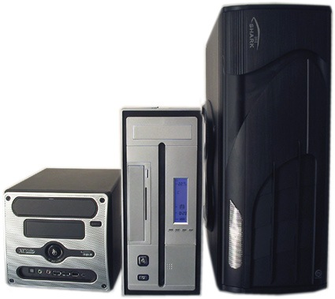
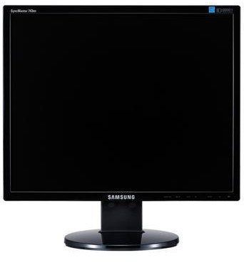
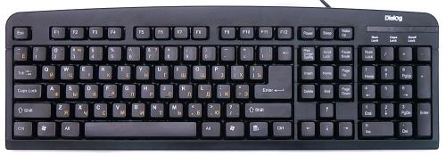
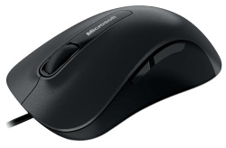
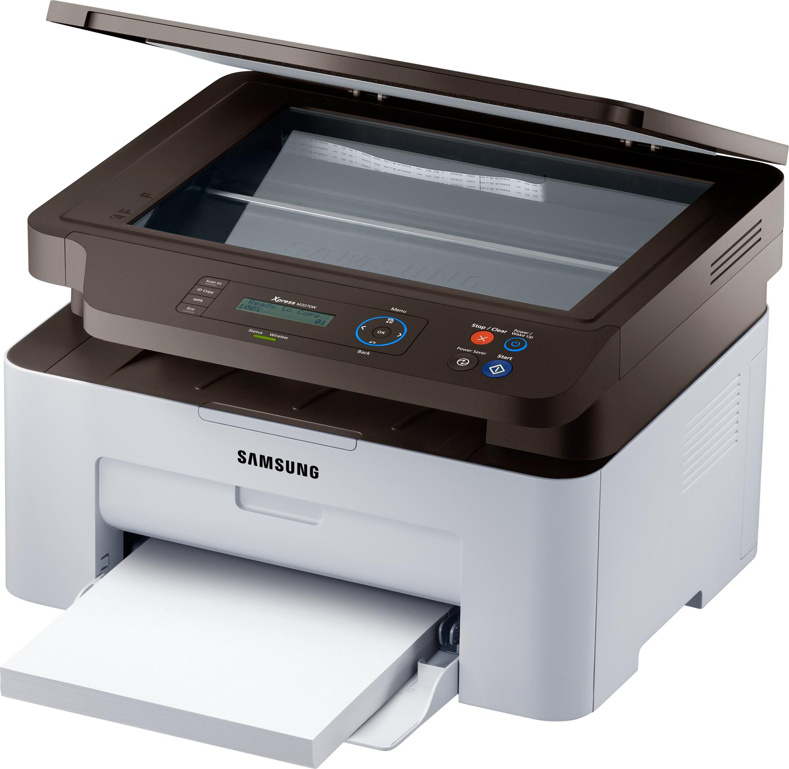

В этой статье, которая подготавливалась для начинающих пользователей, мы рассмотрим устройство компьютера. Также узнаем основные характеристики устройств и какие функции они выполняют.
Обычный персональный компьютер, который мы используем в нашей повседневной жизни состоит из таких частей:
|  |
Системный блок — это центральная часть компьютера, в которой располагаются все самые важные составляющие. Всё, благодаря чему работает компьютер. Выпускаются самые разнообразные системные блоки, которые различаются по размерам, дизайну
и способу сборки.
Основные элементы системного блока:
- Материнская плата;
- Процессор;
- Оперативная память;
- Видеокарта;
- Жёсткий диск;
- Оптический привод (DVD, Blu-ray);
- Блок питания
|
|  |
Монитор предназначен для показа изображений поступающих от компьютера. Он относится к устройствам вывода информации компьютера.
Основные характеристики мониторов:
- размер экрана – измеряется в дюймах (1 дюйм=2,54 см) по диагонали. На данный момент наиболее популярными являются ЖК-мониторы с диагональю 19-23 дюймов;
- формат экрана (соотношение сторон по вертикали и горизонтали), сейчас почти все мониторы продаются в широкоформатном исполнении: формат 16:9 и 16:10;
- тип матрицы – основная часть ЖК-монитора, от которой на 90% зависит его качество. В современных мониторах применяется один из трёх основных типов матриц: TN-film (наиболее простой, самый дешёвый и распространённый), S-IPS (обладают
наилучшей цветопередачей, применяется для профессиональной работы с изображениями) и PVA/ MVA (дороже TN-film и дешевле IPS, можно сказать, что эти матрицы являются компромиссом между TN+Film и IPS.);
- разрешение экрана – число точек (пикселей) в ширину и в высоту, из которых состоит изображение. Наиболее распространённые 17 и 19-дюймовые мониторы имеют разрешение 1280х1024 и 1600х1200 точек. Чем выше разрешение, тем, естественно,
детальней получается изображение;
- тип разъёма используемый для соединения с компьютером, аналоговый VGA (D-Sub) или цифровые разъемы DVI, HDMI.
|
| 

|
Клавиатура — одно из наиболее часто используемых устройств ввода данных в компьютер.
Компьютерная мышь также, как и клавиатура, является устройством ввода информации в компьютер. Компьютерные мышки бывают разные и по дизайну и по принципу работы и по функциональности. Сегодня наиболее распространены оптические мышки, с
двумя кнопками и одним колесом прокрутки.
|
|  |
Самые распространённые дополнительные устройства
- Принтер — устройство для печати текста и изображений на бумагу. Также относится к устройствам вывода информации ПК.
- Сканер — устройство для считывания и ввода текстовой и графической информации в компьютер.
- МФУ — Многофункциональное устройство. Объединяет в себе принтер, сканер и ксерокс.
- Веб-камера — это небольшая цифровая камера, которая совместно с компьютером служит для передачи изображения при общении в интернете.
|